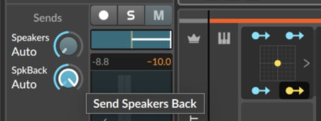
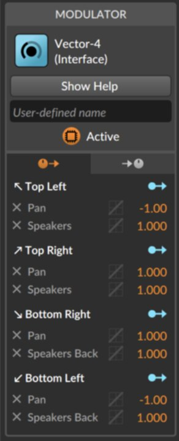

Quadraphonic Setup in Bitwig 5
As of writing, Bitwig does not natively support quadraphonic (four-channel surround) audio. This is the workaround I use.
For a different approach, see here: bitwiggers.com/presets/0e7ad7d4-1480-4ecb-b7f9-000ee2cacb70/ .
The basic idea is to configure Bitwig to use two sets of stereo speakers (front and back), then hook them up to Bitwig's XY grid modulator where X controls pan and Y controls front/back.
(1) Create two stereo output buses, corresponding to the front and back speaker pairs. 
Easy enough, just configure your audio settings appropriately.
(2) Create two FX tracks, each corresponding to an output bus, and route them appropriately.
We'll route the audio through these buses in a later step; setting this up gives control over the routing.
(3) Add a track and give it a Vector-4 modulator as a track modulator.We'll use this Vector-4 modulator for 2d panning.
(4) Map the modulator things on the left and right to hard panning the track left and right accordingly.
Make sure to map both the top and the bottom thing on the left and right. After this step, the Vector-4 should function like a simple 1D left-right pan.
(5) Map the modulator things on the top to send to the front speakers, and the ones on the back to send to the back speakers.
After this step, it should be possible to crossfade between the front and back speakers by moving the Vector-4 vertically.
(6) Make sure the modulation amounts are normalized
Make sure the inspector matches what is shown here, with only positive and negative 1s for the Vector-4 modulation amounts. This ensures that the behavior of panning around the Vector-4 is mostly consistent.
(7) Mute the Master track.
The "Speakers" and "Speakers Back" already output to the speakers, so Master isn't doing anything necessary here. That said, it still can be used to monitor the composite loudness of everything that's going on
Final thoughts.That's the gist of the method. One downside is that it doesn't use panning curve techniques (when panned between two speakers, it's necessary to mark up the volume for things to sound consistent). But unlike the other method linked above, you can monitor all the levels, including the composite ones, directly in Bitwig's UI.
It does take some time to set up the first track, but once one track is set up, it's no issue to copy-paste it to create more. As such, I recommend having a template track with this setup that you duplicate whenever you need a new track.
When exporting, select the two buses; Bitwig will export two stereo files, corresponding to the front two and back to speakers. If you want to put the files into a true quad format, it's probably necessary to use another program. I've used Audacity for this.
Hopefully Bitwig will add true proper multichannel support soon, but hopefully this can work as a stand-in until then.
I used this technique for Untitled 17.
Alright, enough words, thanks for reading, and please feel free to let me know if you have any thoughts/questions.
updated 2024-05-30All content copyright (c) Dmitri Volkov 2024 unless otherwise noted.